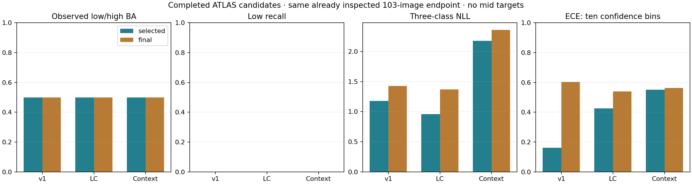

TREAD-TWO · Research evidence handoff
Three completed candidate fits, their evidence reviews and the existing-data readiness findings.
Research only. All candidates miss the 62 historical low images. Geometry is retained from TREAD-ONE. Mileage classes do not measure physical depth or safety.
Candidate results

The same already inspected 103-image low/high endpoint is used. These descriptive comparisons are not independent confirmation. Original validation checkpoint selection is retained.Verified evidence
All scientific evidence remains at its original pinned HF revisions. This local handoff creates no new model results and has not itself been published to HF.